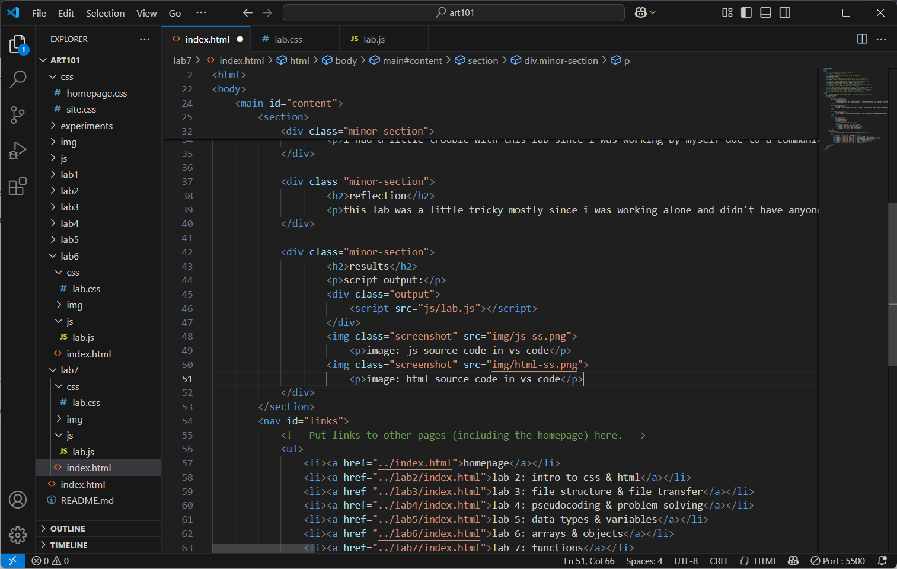

lab 7 - functions
challenge
the main goal for this lab was to build a function that takes user input and sorts the letters of whatever the user types.
problems
i had a little trouble with this lab since i was working by myself due to a communication error. i think i had the basic function structure correct initially since i based it on the very very similar work we did in lecture, but it took me a minute of studying the source code on wes's homepage and looking through some tutorials linked in the lab instructions to figure out how to incorporate user input. it ended up not taking me too long though! i also didn't realize the due date for this got moved to sunday night instead of our usual monday night due date, but that's on me for not checking haha!
reflection
this lab was a little tricky mostly since i was working alone and didn't have anyone to bounce ideas off of, but i managed alright! i was able to use the resources at my disposal to figure my issues out on my own, and i was even able to make my function work around capitalized letters in case someone doesn't normally just user lowercase like me lol. i haven't yet worked out a way to capitalize the first letter of the reversed string, but that's a challenge for later!
results
script output:
image: js source code in vs code
image: html source code in vs code